← Home
Street Art
2021
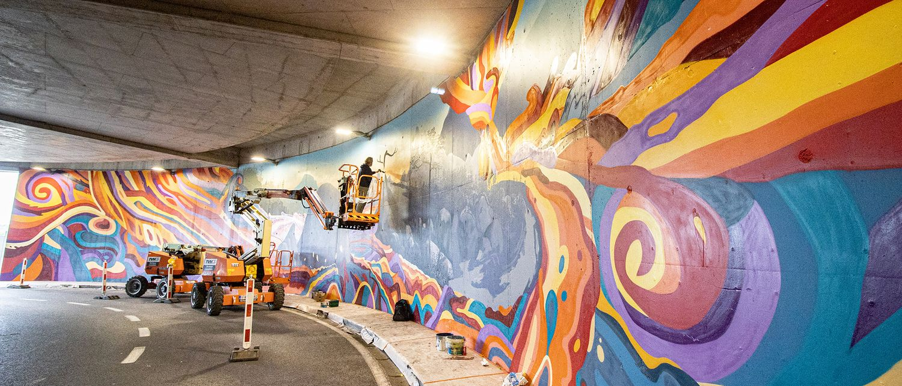
Fresh Paint OLLN — Louvain-la-Neuve
2020
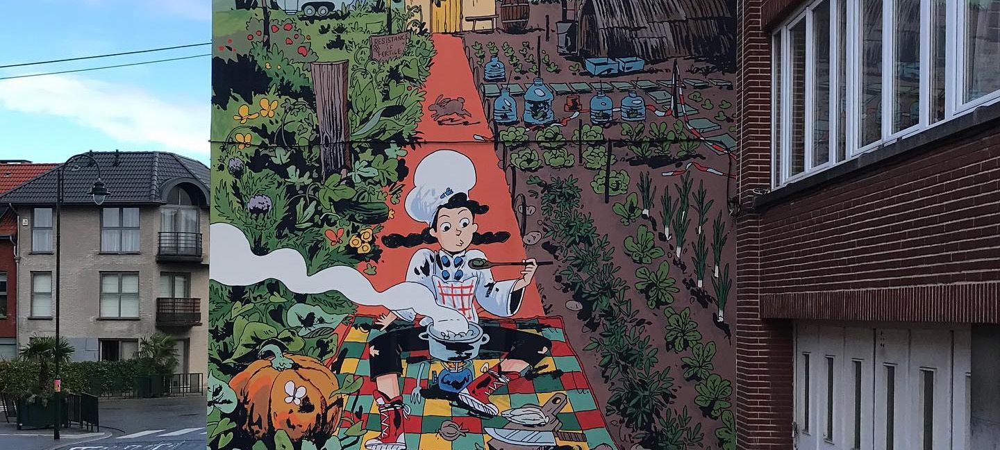
Yasmina — Haren, Brussels
2019
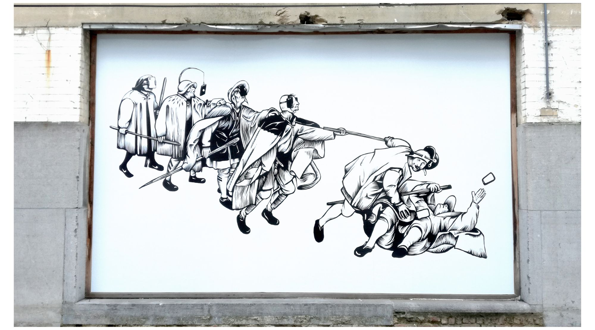
Bruegel in Coudenberg — Coudenberg Museum, Brussels
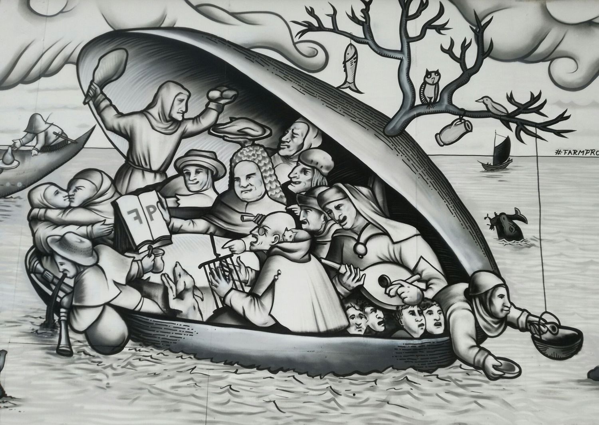
Prints in the Age of Bruegel — Brussels
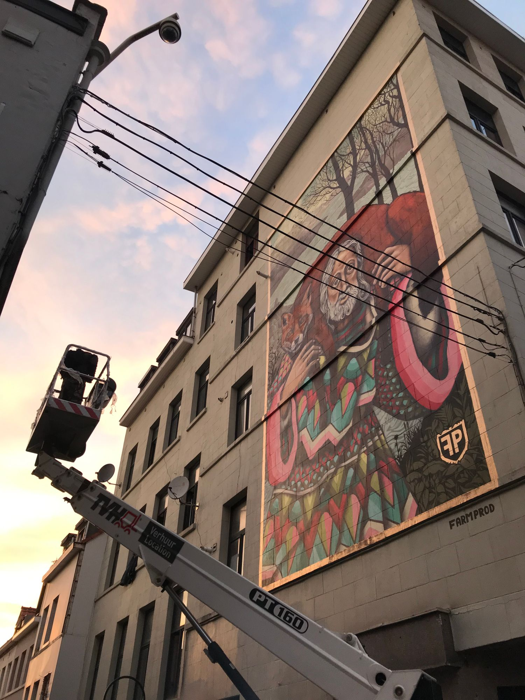
Bruegel Meets Street Art — Brussels
2017
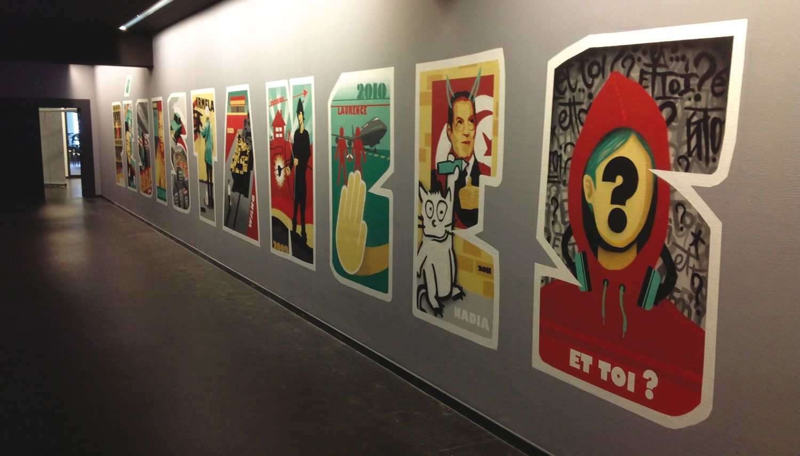
Resistances — Cité Miroir, Liège
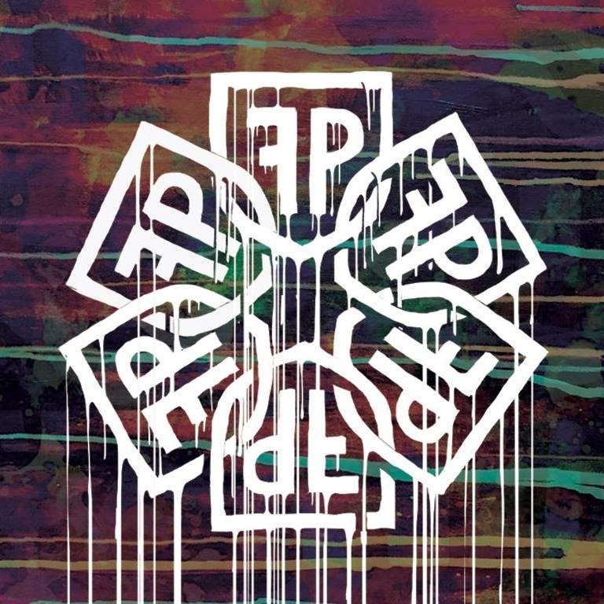
Intersections — Brussels
2015
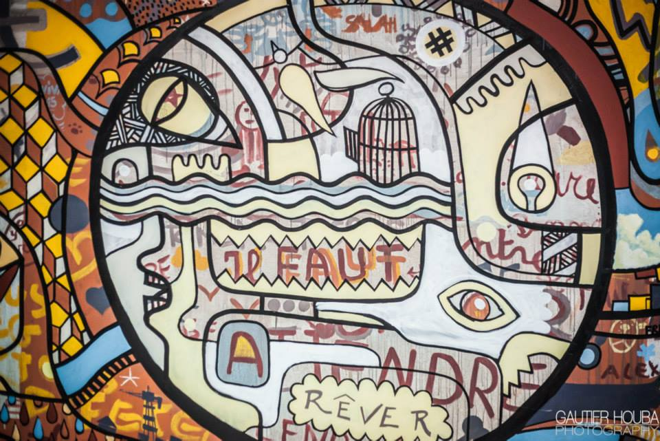
New Year For All — Café Frisko / Nativas, Brussels
Photo: Gautier Houba Photography
2013
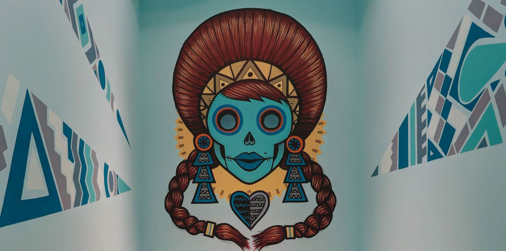
Charli Boulangerie / Charli Salé — Brussels
Undated
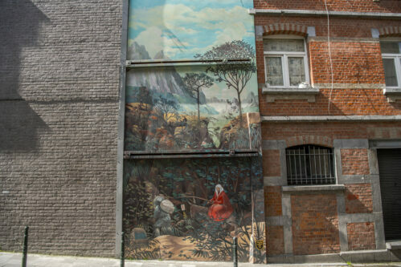
Landscape with the Flight into Egypt — Rue des Capucins 44, Brussels
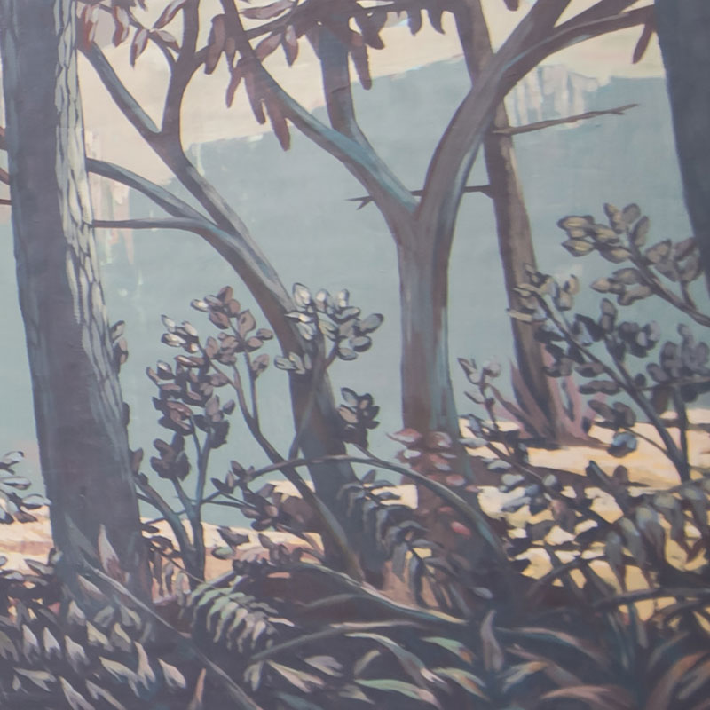
Sans-titre — Rue de la Grande-Île 27, Brussels